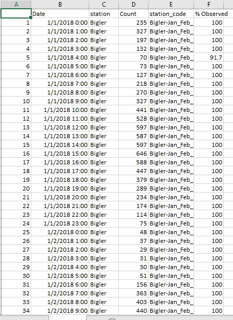

Data cleaning and preparation (munging) is often the most time intensive element of an analytical project. Before you can create any analysis, visualization, or map, data needs to be in a consistent and coherent format. We create workflows that automate the data munging process, which saves time and resources compared to traditional manual methods.
The example below demonstrates a workflow that transforms messy, disparate data into a clean, coherent dataset that is ready to be analyzed. The original data consisted of 200-300 excel spreadsheets - representing hourly traffic count data - which included complex formatting and data structures. Our workflow reformatted and then combined all of the individual spreadsheets, geocoded the spatial elements of the data, formatted the time series elements of the data into relevant date formats (Hour, Day, Week, Month), and finalized the data into one clean dataset that is ready to be analyzed and visualized.
library(pacman)
p_load(tidyverse, readxl, lubridate, purrr, janitor, scales, plotly, tmap, leaflet, DT,lubridate,sf,xfun, ggridges, ggmap)
## A function that reads in and combines several dozen California PEMS traffic count spreadsheets
file.list <- list.files(pattern='*.xlsx')
file.list <- setNames(file.list, file.list) # only needed when you need an id-column with the file-names
pems <- map_df(file.list, read_excel, .id = "id") %>%
mutate(Hour=as.character(as.POSIXct(Hour, format="%m/%d/%Y %H:%M"))) %>%
mutate(station=sub("(^[^-]+)-.*", "\\1", id)) %>%
rename(Date=Hour, Count=`Lane 1 Flow (Veh/Hour)`, station_code=id) %>%
#filter(`% Observed` !=0) %>%
select(Date, station, Count, station_code,`% Observed`)
## A function that reads, reformatts, and combines over 200 Nevada DOT traffic count spreadsheets
ndot<- function (filename){
test99<-read_xls(paste0("H:/model/model_update_2019/validation/NDOT_2018_counts_hourly/all/",filename), sheet="DV02P", skip=8, col_names = F) %>%
select(1,2,4,12,15,21,23,30,32,39,41,48,50,58,61)
row1<-lead(test99[1,],1)
test99[1,] <- row1
test99 <-test99 %>% remove_empty("rows")%>%
remove_empty("cols")
my.names <- test99[1,]
colnames(test99) <- my.names
test99 <- test99 %>%
slice(-1)
names(test99)[1]<-"time"
test99[test99 == 99999] <- NA
test99 <- test99 %>% remove_empty("rows") %>% slice(1:24) %>%
pivot_longer(c(2:8))
}
setwd("H:/model/model_update_2019/validation/NDOT_2018_counts_hourly/all")
file.list <- list.files(pattern='*.xls')
file.list <- setNames(file.list, file.list)
ndot1 <- map_df(file.list, possibly(ndot, otherwise = tibble(x="error reading")), .id = "id")
ndot_clean <- ndot1 %>%
mutate(Date=as.character(as.POSIXct(paste(sub(" ","",substring(name, 6)), time), format="%m/%d/%Y %H:%M")),
`% Observed`=100,
station_code=substr(id,26,31),
value=as.numeric(value),
station=case_when(station_code== "005211" ~ "US 50 & Lake Parkway",
station_code== "005315" ~ "Lower Kingsbury (SR 207)",
station_code== "025212" ~ "US 50 & Carson St (Spooner Summit)",
station_code== "031224" ~ "SR 28 & Lakeshore Dr (Incline)"),
value=na_if(value, "99999")) %>%
rename(Count=value) %>%
select(Date, station, Count, station_code,`% Observed`) %>%
filter(station_code != "005211")
## Combines the California and NDOT data into one final dataset
continuous_prep<-bind_rows(ndot_clean, pems) %>%
#complete(station,Date) %>%
mutate(Date=as.POSIXct(Date, format="%Y-%m-%d %H:%M:%S"),weekday=wday(Date, label=TRUE), Day=date(Date), Day1=as.character(Day), month=month(Date, label=TRUE), hour=hour(Date),
wday_wknd = case_when(weekday %in% c("Mon","Tue","Wed","Thu") ~ "Weekday",
weekday %in% c("Fri","Sat","Sun") ~ "Weekend"),
ext_int=case_when(station %in% c("Echo_Summit","US 50 & Carson St (Spooner Summit)","Brockway_Summit") ~ "External Station",
TRUE ~ as.character("Internal Station"))) %>%
filter(Day >= "2018-01-01" & Day <= "2018-12-31") %>%
select(station,Date, Day, weekday, hour, month, Count, wday_wknd, ext_int, station_code,`% Observed`,Day1) %>%
left_join(
data.frame(
station=c("Lower Kingsbury (SR 207)", #"US 50 & Lake Parkway",
"US 50 & Carson St (Spooner Summit)","SR 28 & Lakeshore Dr (Incline)","Bigler","Brockway_Summit","Echo_Summit","F_Street","Midway","Sawmill"),
lat=c(38.967500,#38.965484,
39.121111,39.249357,38.935389,39.260764,38.815358,38.904321,38.952279,38.875694),
lon=c(-119.923004,#-119.937834,
-119.824151,-119.985101,-119.977477,-120.071504,-120.027960,-119.999118,-119.949293,-120.005384)
), by="station")
## Export the dataset into one final, clean .csv file
write.csv(continuous_prep,"filepath")